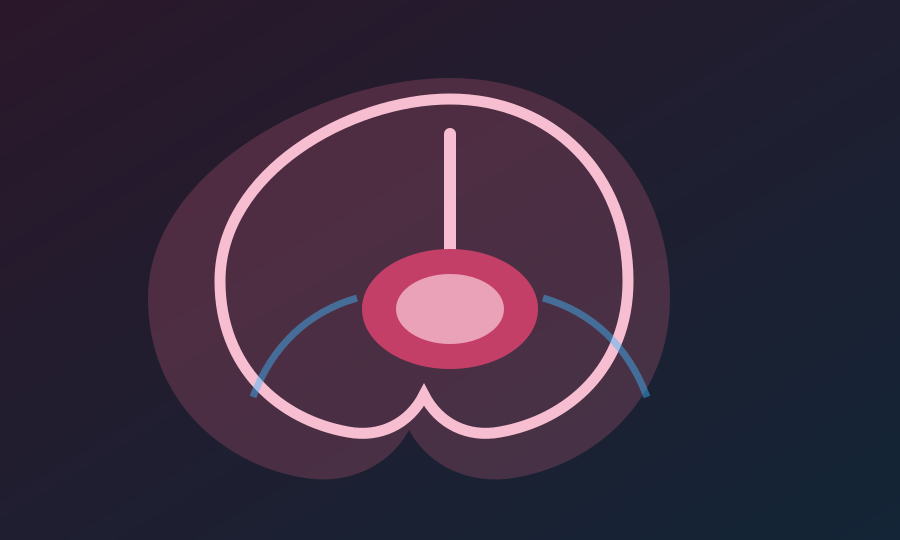

QuranMiracles e lidh fjalën kuranore “alaq” me një pamje shumë konkrete: embrioni i hershëm që ngjitet dhe qëndron i varur në murin e mitrës, në vendin ku mund të ushqehet dhe të vazhdojë zhvillimin.

Thelb: Fjala “alaq” nuk është thjesht emër abstrakt për embrionin; ajo nënkupton varjen, kapjen dhe lidhjen me një vend.
Çfarë ndodh në javët e para
Pas fekondimit, qeliza e parë ndahet, udhëton drejt mitrës dhe kërkon një vend të përshtatshëm ku muri i mitrës është i pasur me enë gjaku. Aty nis implantimi.
Ky moment është jetik, sepse embrioni nuk mund të rritet i izoluar. Ai duhet të marrë oksigjen dhe ushqim nga nëna përmes strukturave që më pas do të zhvillohen në placentë.
Pse përshkrimi është interesant
Artikulli thekson se embriologjia si shkencë nuk ekzistonte në shekullin e shtatë. Pa mikroskopë dhe pa imazheri moderne, varja e embrionit në murin e mitrës nuk ishte diçka që mund të shihej me sy.
Leximi shkencor nuk e zëvendëson kuptimin shpirtëror të ajetit; përkundrazi, i jep lexuesit një dritare tjetër për të parë rendin e krijimit.
Lidhja me ajetin
Kuran 23:13-14
Pastaj e vendosëm atë si pikë në një vend të sigurt; pastaj pikën e bëmë alaqah.
Përmbledhje në shqip, e parafrazuar nga tema “Hanging on the Wall of Womb” në QuranMiracles.com.